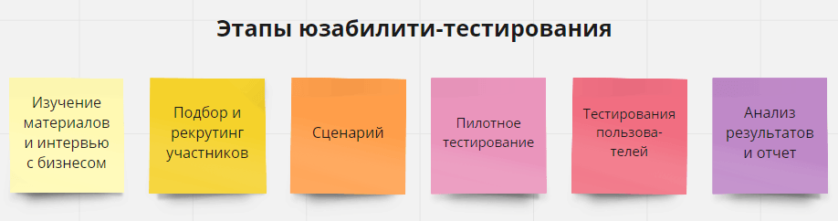
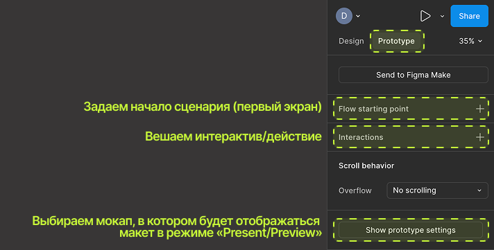
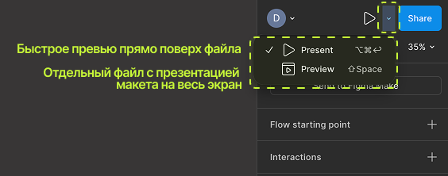
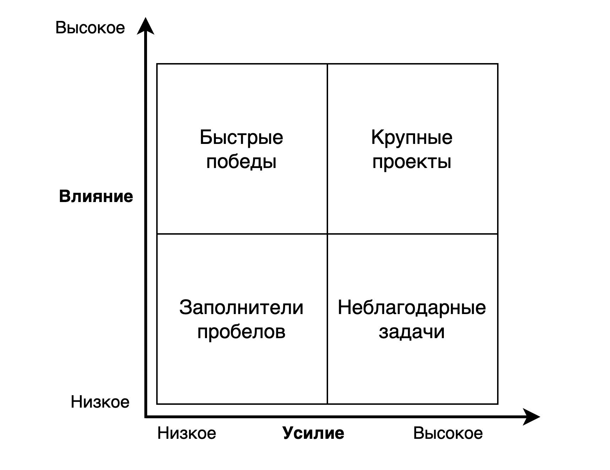

Мы прошли весь путь — от установки Figma до понимания потребностей пользователей. Но откуда узнать, что готовое решение реально работает, а не просто кажется логичным вам и команде? Ответ — тестирование на реальных пользователях. Это последний урок модуля, и сегодня закрываем круг: от идеи до проверки.
План урока
- Зачем тестировать дизайн до релиза
- Виды юзабилити-тестирования
- Как составить сценарий теста (task list)
- Режим презентации/превью в Figma — практика
- Что смотреть во время теста
- Что делать с результатами: приоритизация правок
- Частые ошибки при тестировании
- Итог модуля + домашнее задание
1. Зачем тестировать дизайн до релиза
Правка на этапе макета в Фигме стоит минуты. Та же правка после релиза в разработанном продукте — это заново открытая задача, код, тестирование, деплой. Юзабилити-тестирование на прототипе — самый дешёвый способ поймать проблему до того, как она станет дорогой. Исследования Нильсена показывают: устранение проблем на ранних этапах в разы дешевле, чем после релиза (правило «умножения на 10» с каждым этапом ближе к продакшену — оценка приблизительная, но направление верное).
📎 Источник: NN/g — Cost of Iteration
2. Виды юзабилити-тестирования

- Модерируемое — исследователь находится рядом (лично или по видеосвязи), задаёт вопросы, просит проговаривать мысли вслух («think aloud»), может уточнять «а почему вы сейчас нажали именно сюда». Даёт больше глубины, но дороже по времени.
- Немодерируемое — пользователь проходит сценарий самостоятельно, часто через специальные сервисы (Maze, UserTesting и подобные), запись действий изучается потом. Быстрее масштабируется, но меньше возможности уточнить «почему».
- Качественное vs количественное — качественное (5-8 человек) отвечает на вопрос «почему это не работает», количественное (десятки-сотни) — «сколько людей столкнулись с этой проблемой».
📎 Источник: NN/g — Usability Testing 101 · Статья именно про модерируемое тестирование
3. Как составить сценарий теста (task list)
Хороший сценарий теста — это не «походите по макету и скажите, что думаете», а конкретные задачи, сформулированные через контекст, а не через интерфейс. Плохо: «Нажмите на кнопку "Оформить заказ"» (это подсказка, а не задача). Хорошо: «Вы хотите купить эти кроссовки в 42 размере — сделайте это».
Структура простого теста на 5 пользователей:
- 2–3 вступительных вопроса про контекст пользователя (без подсказок про продукт).
- 3–5 сценарных задач по прототипу.
- Пара вопросов после каждой задачи: «Насколько легко было это сделать?» (шкала 1–5), «Что было непонятно?».
- Финальный открытый вопрос: «Что бы вы изменили в первую очередь?».
Дальше можно использовать внешние инструменты типа Pathway (топ за свои деньги(в следующем модуле Катя тоже про него расскажет)), или делать все самим
📎 Источник: Толковая статья от Яндекс Практикум
4. Режим презентации/превью в фигме — практика
Чтобы протестировать макет, его сначала нужно превратить в кликабельный прототип — связать экраны переходами на вкладке Prototype (эта вкладка была на панели справа ещё в уроке 2, детальная работа с прототипированием — тема отдельного блока курса, сегодня фокус на самом тестировании).
Выделите объект и посмотрите на правую панель, там увидите:

Дальше — кнопка Play (▶) в правом верхнем углу открывает режим презентации/превью:

Разница двух режимов:
- Превью: Появляется небольшой плавающей или встроенной панелью прямо поверх вашего рабочего пространства в текущей вкладке. Нужен дизайнеру во время работы, чтобы быстро протестировать клик, анимацию или переход без лишних переключений. Ограничено маленьким окном, вокруг видны элементы интерфейса самой Фигмы. Вызывается комбинацией Shift + Space (Shift + Пробел).
- Презентация: Открывается на совершенно новой вкладке браузера или приложения (либо в полноэкранном режиме). Нужна для демонстрации готового макета или интерактивного прототипа клиентам, коллегам и стейкхолдерам, скрывая интерфейс редактора. Убирает лишние инструменты, оставляя чистый холст (часто на черном или цветном фоне) для максимальной концентрации внимания. Запускается кликом по иконке Present (кнопка Play) на панели или горячей клавишей Ctrl + Alt + Enter (Cmd + Option + Return).
В режиме презентации будет своя навигация, в ней:
- прототип открывается как полноценное приложение, без боковых панелей;
- работают все настроенные переходы, анимации, оверлеи;
- есть доступ к Comments — можно оставлять комментарии прямо поверх прототипа, отмечая проблемные места;
- есть Share — генерируется ссылка, по которой прототип открывается в браузере у любого человека без аккаунта в фигме (нужен только доступ по ссылке) — это и есть то, что вы отправляете пользователю для теста.
- в настройках презентации (значок шестерёнки) можно включить Show hotspot hints — временную подсветку кликабельных зон, полезно для себя при проверке, но обычно отключается перед реальным тестом, чтобы не подсказывать пользователю лишнего.
Для удалённого немодерируемого теста ссылку из Share можно отправить напрямую или встроить в сервисы вроде Maze, которые поверх прототипа Figma добавляют аналитику: тепловые карты кликов, время выполнения задачи, процент успешного прохождения.
📎 Источник: Figma Help — Present and share prototypes
5. Что смотреть во время теста
- Успешность — смог ли человек выполнить задачу вообще (бинарно: да/нет).
- Путь — прошёл ли он так, как задумано, или нашёл обходной путь (обходной путь — тоже ценная находка, иногда даже лучше вашего).
- Колебания и паузы — место, где пользователь завис и молчит — почти всегда сигнал проблемы, даже если в итоге он справился.
- Формулировки вслух — что человек говорит, пытаясь понять интерфейс («наверное, это где-то тут», «непонятно, что будет, если нажать») — дословные цитаты полезнее пересказа своими словами.
Важно фиксировать наблюдения сразу, а не полагаться на память — короткая заметка в моменте много ценнее часового пересмотра записи вечером.
6. Что делать с результатами: приоритизация правок

После 5 тестов у вас будет список проблем разного масштаба — от «непонятная иконка» до «человек не смог оформить заказ вообще». Приоритизируйте по матрице: частота (сколько из 5 человек столкнулись) × серьёзность (помешало продолжить или просто слегка смутило). В первую очередь чинится то, что часто и серьёзно — остальное можно отложить в бэклог с пометкой.
7. Частые ошибки при тестировании
- Задавать наводящие вопросы («вам же нравится эта кнопка?») вместо нейтральных.
- Объяснять пользователю, как правильно, вместо того чтобы наблюдать за затруднением.
- Тестировать только на «удобных» респондентах (коллегах, друзьях, которые уже знают продукт).
- Останавливаться после первого раунда правок — тестирование это цикл, а не разовое событие: поправили — проверили снова на новых задачах.
Итог модуля и курса
На этом первые два модуля курса закончены: вы прошли путь от установки Фигмы и базовых инструментов до понимания пользователя и проверки решений на практике. Дальше в курсе — более глубокие темы прототипирования, продуктового майндсета, практики на редакторских задачках, но фундамент, после этих двух модулей, уже заложен.
Домашнее задание (финальное для модуля):
- Собрать простой кликабельный прототип из 3-4 экранов через вкладку Prototype.
- Составить сценарий теста из 3 задач по правилам раздела 3.
- Провести тест хотя бы с одним человеком через режим презентации, зафиксировать наблюдения.
- Оценить найденные проблемы по матрице частота × серьёзность.